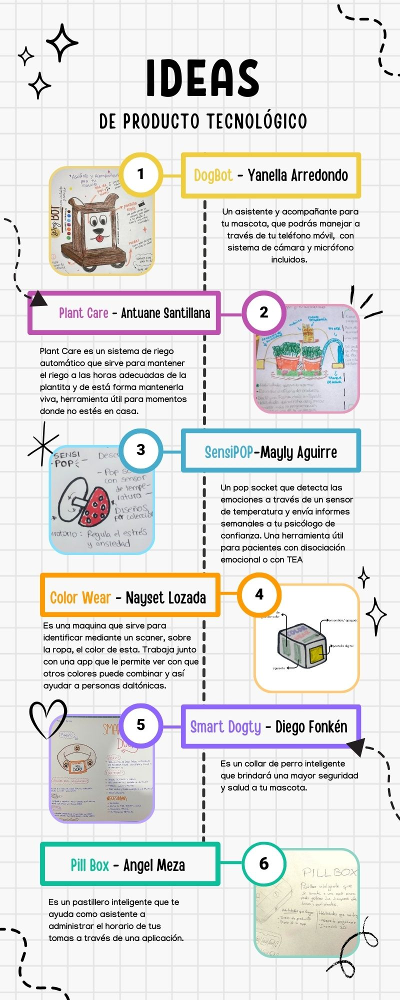
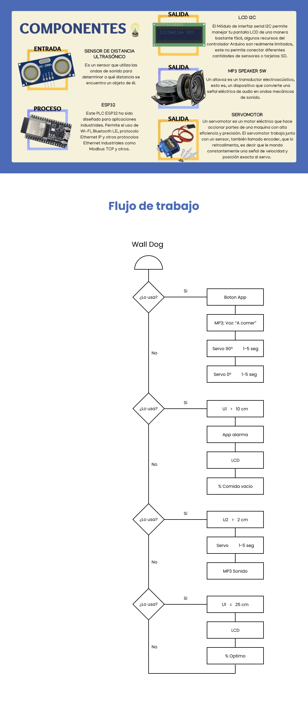

쯈uiénes somos?
Somos un equipo creativo con ideas innovadoras y gran pasión por el Diseño que quiere cambiar el mundo sin pensar en los límites.



Wall-Dog ¡Una nueva tecnología para cuidar a tu mascota!
Luego de la formación de nuestro grupo, empezamos compartiendo las ideas sobre los productos que creamos para la dinámica 3, entre ellos se encontraban 1 sensor emocional, 1 pastillero inteligente, 1 asistente para daltónicos y 2 artículos para mascotas: collar GPS y robot monitor de mascotas. A pesar de que eran de temáticas diversas, coincidimos en desarrollar una idea enfocada en mascotas, partiendo de la propuesta del robot aterrizamos nuestras ideas y planteamos diferentes funciones que se pudieran ejecutar con el sistema Arduino. Esto dió como resultado la idea de nuestro producto final.
쮺ansado de preocuparse por el horario de comidas de su mascota cuando no se encuentra en casa? Dile adiós al estrés gracias al dispensador de alimento para mascotas Wall-Dog" Esta innovadora herramienta no sólo garantiza que su mascota esté bien alimentada, sino que también ofrece monitoreoen tiempo real para mantenerlo conectado con su mascota sin importar dónde se encuentre.


Dispensador de Comida Automatizado
Wall-Dog no solo simplifica la rutina de alimentación de tu mascota, sino que también garantiza la precisión y regularidad en las porciones, promoviendo una dieta equilibrada. Al liberar a los dueños de la preocupación por los horarios de comida, este dispensador automático crea un ambiente estable y seguro para las mascotas, mejorando su bienestar y eliminando la ansiedad relacionada con la comida.

Pantalla LED Informativa
La pantalla LED proporciona un canal instantáneo de comunicación entre el dueño y el dispensador. Al mostrar datos como la cantidad de comida disponible y el estado del dispositivo, ofrece transparencia y control. Esta información en tiempo real empodera a los dueños para tomar decisiones informadas sobre la alimentación de sus mascotas, promoviendo una gestión eficaz incluso cuando están lejos de casa.

Micrófono Incorporado para Comunicación Bidireccional
El micrófono no solo capta los sonidos del entorno de la mascota, sino que también permite a los dueños hablar con sus animales a través de la aplicación. Esto fomenta una conexión emocional vital, reduciendo el estrés de la separación y proporcionando consuelo. Además, al enviar estos sonidos al aplicativo, los dueños pueden evaluar el estado de ánimo y las necesidades de sus mascotas, facilitando una atención personalizada, incluso a distancia.

Opción de Grabar y Reproducir Sonidos
La capacidad de grabar sonidos desde el aplicativo y reproducirlos en el dispensador es una función profundamente empática. Los dueños pueden enviar mensajes de voz reconfortantes o incluso el sonido familiar de su voz, calmando a sus mascotas en momentos de soledad. Esta función no solo establece una conexión emocional, sino que también puede ayudar a las mascotas a adaptarse a nuevas rutinas o entornos, mitigando el impacto del cambio a través de la familiaridad auditiva.
1
Prototipo Maqueta Fitis
El fin de realizar un prototipo tipo maqueta fue nuestra prueba y error ya que nos ayudó a notar esos detalles mínimos pero importantes del proyecto, pudimos también ver las medidas adecuadas a usar para cada espacio interior de la maqueta y qué función tendrá como lo que es el contenedor, el espacio en donde estarán ubicado los componentes que le darán vida al proyecto para así una vez listo y corregido, continuar con los siguientes pasos.
2
Diseño (fotos de plantillas de autocad y 3D, boceto actualizado)
Para el diseño del prototipo se decidió poder crear un producto amigable y con formas que den confianza y seña fácil de recordar, comenzando con un cuerpo rectangular y depues una cabeza desplegable con la que se podrá manejar los controles, el diseo contará con materiales ecoamigables y ligero para su fácil traslado y uso. Como parte de los colores se utilizarán tonos neutrales para no confundir a la mascota, así mismo tendrá pequeños detalles que solo Wall-Dog brindará, cabe resaltar que los diseños fueron hechos en Autocad y luego pasados a diseño 3D para su respectivo corte láser.

3
Desarrollo
Una vez teniendo listo nuestro archivo con las plantillas, fuimos el miércoles directo a la sala de corte, llevamos nuestro mdf de 4 mm en formato A3. El profesor nos dió la pc para abrir nuestro archivo, pero en ese momento nos dimos cuenta que teníamos 8 hojas de plantillas en el autocad y solo 6 planchas de trupán. Entonces nos pusimos a optimizar el material, y amodamos neustras piezas para que encajaran en solo 6 piezas, después de un largo rato acomodando se logró. Finalmente el profesor encargado de la sala de corte envió nuestro archivo a imprimir.
4
Prototipo Final
Para el prototipo final, obtuvimos piezas como de rompecabezas lo cual fue amigable a la hora del armado, unimos todo según nuestro diseño y fue muy interesante y divertido visualizar el resultado final ya que todo lo que se había sido pensado desde un inicio finalmente tenía una forma. Ahora tenemos que preocuparnos por el circuito que irá dentro para que todo calce bien y de esta forma que nuestro proyecto sea de gran utilidad para todos nuestros usuarios.
Presentación Prototipo Walldog
Diego Fonkén
Hello! Soy Product Designer y me considero un amante de las travesias culinarias, viajes y fotografías, dentro mis principales cualidades son la Reciprocidad y Resposabilidad.

Mayly Aguirre
Hola <3 soy Mayly, tengo 21 y voy cursando 7tmo ciclo de Arquitectura de Interiores, me encanta todo lo relacionado al diseño, disfruto admirando locales con espacios bien pensados y visitar exposiciones, además intento aprender diferentes artesanías.
Angel Meza
Hola, soy Angel, tengo 23 y estudio DDG, soy de Ica, me mudé a Lima hace unos meses y me gusta mucho conocer nuevos lugares con buena comida. Trabajo como UX/UI Designer y me gustan los perros :D
Antuane Santillana
Hola soy Antuane Santillana Carrillo pero me pueden llamar Antu con confianza jeje, estudio la carrera de CAM y actualmente me encuentro cursando el 8vo ciclo. Soy de las personas que les gusta hacer actividades diferentes y aprender cosas nuevas, entre mis gustos están la fotografía, el teatro, ver tendencias, combinar ropa y más. Mi sueño anhelado es poder emprender mi propia agencia donde realice servicios Audiovisuales y sobretodo poner a prueba mi creatividad, innovación y constancia. Disfruten de su estadía aquí, un gusto conocerlos.
Nayset Lozada
Hola, soy Nayset Lozada, tengo 20 años, estoy curzando el 7to ciclo de la carrera de Arquitectura de Interiores en Toulouse Lautrec. Desde muy pequeña me gustaba todo lo relacionado a decoración de interiores. A mi familia siempre le gusto la idea de que estudie esta carrera, cuanto con todo su apoyo y motivación. Estoy en proceso de crear mi propio estudio de Arquitectura e Interiorismo con una prima lo cual me emociona mucho.
Yanella Arredondo
Hola 🤠, soy Yanella, de vez en cuando mi familia me dice Yanis (es algo que me gusta mucho🫢), soy Piscis, tengo 21 años, amo los postres dulces y las pelis de drama románticas! Soy apasionada por los colores, aunque me vista monocromática jeje. Estudio Arquitectura de Interiores y a la par soy maquilladora profesional, tengo 4 bebés perrunos que amo con mi vida🐶, y me gusta viajar mucho a lugares tropicales ♥️🌴.